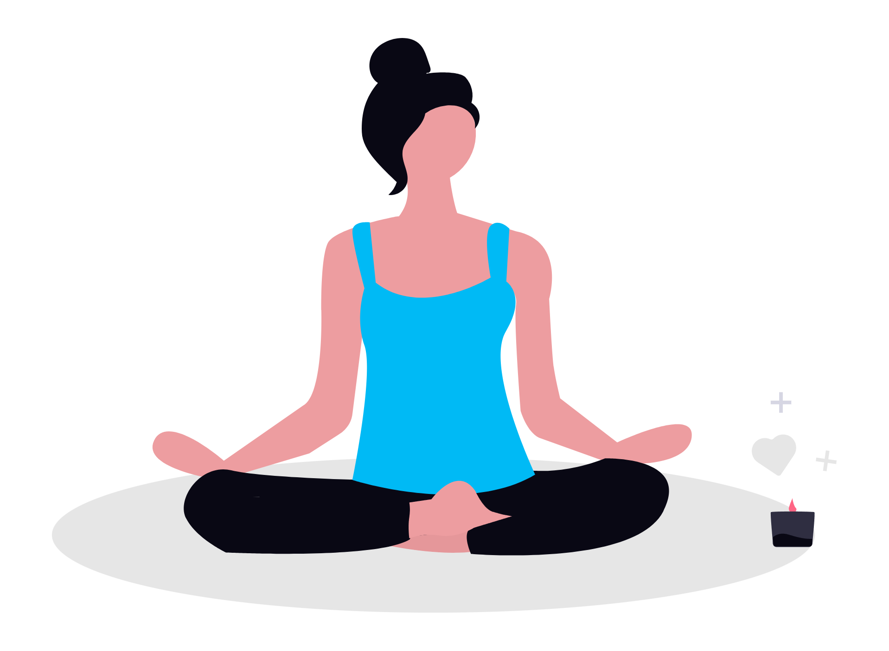

Hi, I'm Ainsley & I'm an ISTP-A.
The "Virtuoso," Assertive variant: independent, hands-on, and more interested in figuring things out than talking about figuring things out. Naturally, that's also the entire design philosophy of this site.

So what does ISTP-A actually mean?
ISTP stands for Introverted, Observant, Thinking, and Prospecting. It's a type that tends to chase its own goals without needing much outside validation, poking at the world with curiosity, a bit of skepticism, and a genuine love of figuring out how things work by taking them apart.
ISTPs also tend to work best solo, at their own pace, without a lot of interruptions — and regular socializing can feel more draining than energizing, so they gravitate toward a few meaningful connections over constant small talk.
The -A (Assertive) part adds a layer of calm confidence: steady under pressure, not too rattled by stress or by what other people think. Put it all together and you get someone who's direct but reserved, generally even-keeled but capable of sudden bursts of energy when a new interest grabs them — which, again, tracks. This whole repo is called tiny chaos for a reason.
The strengths
- 🔧 Hands-onAlways elbow-deep in some project, turning observations into working solutions.
- 💡 ResourcefulIdeas come easily when there's something practical to build.
- ⚡ SpontaneousComfortable going with the flow, saving the energy for when it counts.
- 🗣️ DirectSays what it means without dressing it up, for better or worse.
- 🦎 IndependentBest problem-solving happens alone, on my own terms.
- 🌱 GroundedFocused on right now, not spiraling into hypotheticals.
The quirks (aka growth edges)
- 🙅 UnapologeticCan shift direction with little warning and even less explanation.
- 🧊 Logic over feelingsDefaults to reasoning things out — empathy doesn't always land right.
- 🔒 PrivateNotoriously hard to get to know. Silence over small talk, most days.
- 🎯 Easily boredGreat at tinkering with something new, less reliable once it's "just maintenance."
- 🧭 Fiercely independentSomeone else's schedule imposed on me doesn't sit well for long.
- 🤨 SkepticalLikes proof — which can mean being slow to buy into what can't be quantified.
That's the whole profile. Mildly chaotic, somehow shipping it anyway.